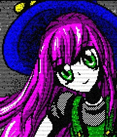

Five Nights At Freddy's
Five Nights at Freddy's é uma série de jogos de terror desenvolvida por Scott Cawthon. O jogo original foi lançado em 2014 e desde então se tornou um sucesso, gerando várias sequências e spin-offs. O enredo de Five Nights at Freddy's gira em torno de uma pizzaria chamada Freddy Fazbear's Pizza, que possui animatrônicos (robôs animados) como atração principal para as crianças. No entanto, à noite, esses animatrônicos se tornam ativos e potencialmente perigosos. O jogador assume o papel de um guarda de segurança que trabalha durante a noite e deve sobreviver a cinco noites, evitando ser atacado pelos animatrônicos.
Outlast II
O segundo título da franquia Outlast mantém a mesma atmosfera opressora e mergulha os jogadores em um pesadelo de horror psicológico. A história se desenrola em uma área remota do deserto do Arizona, onde o jogador assume o papel de Blake Langermann, um jornalista investigativo. Em busca de respostas sobre o misterioso assassinato de uma mulher grávida, Blake se vê preso em um ambiente dominado por uma seita religiosa fanática. Para uma experiência imersiva o jogo se passa em primeira pessoa e o jogador tem a sua disposição apenas uma câmera de visão noturna, sem quaisquer armas, a fuga e furtividade se tornam as principais estratégias de sobrevivência.
Dead Space (2023)
A continuação assustadora da renomada franquia de jogos de terror espacial que coloca os jogadores em uma luta desesperada pela sobrevivência. O jogo segue a história de um engenheiro espacial chamado Isaac Clarke, enquanto ele enfrenta um surto de necromorfos, seres grotescos e mortos-vivos que infestaram uma estação espacial. Ele deve tentar sobreviver desvenda os mistérios por trás do evento catastrófico. A jogabilidade combina elementos de sobrevivência e combate estratégico. Com um arsenal de armas únicas e ferramentas de engenharia, o jogador explora ambientes claustrofóbicos que criam uma atmosfera tensa cria uma experiência aterrorizante e emocionante.
